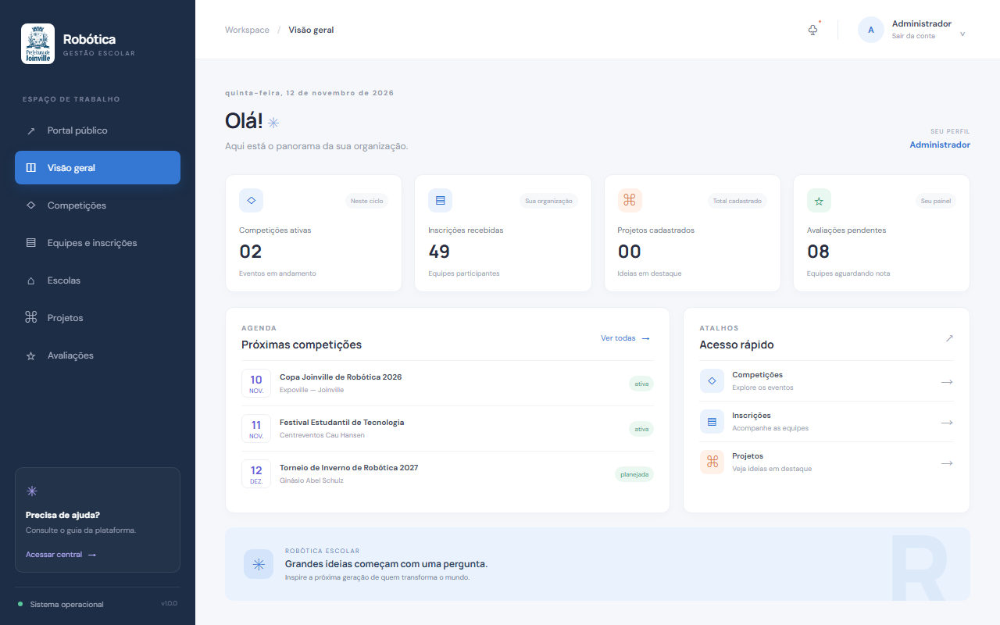
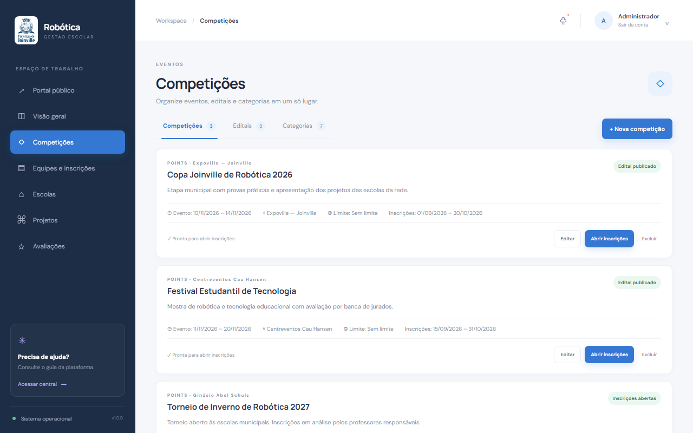
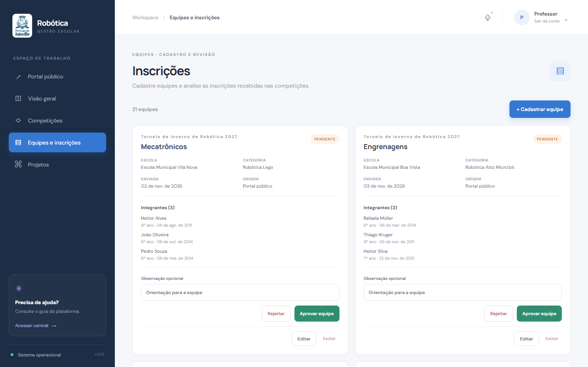
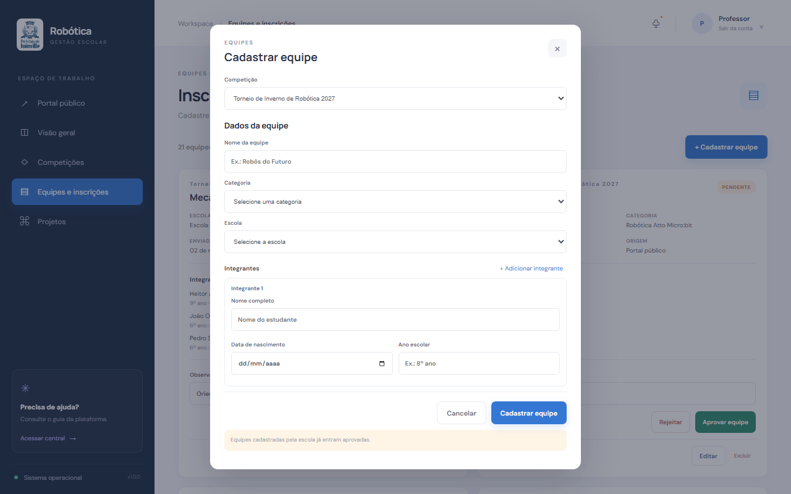
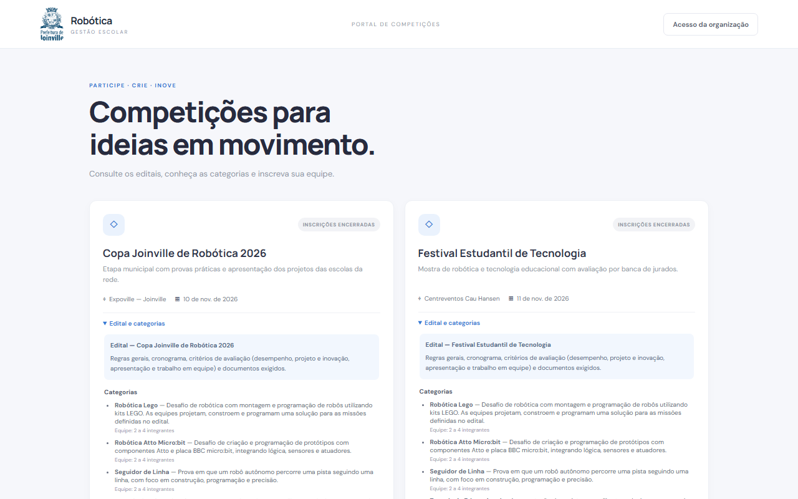
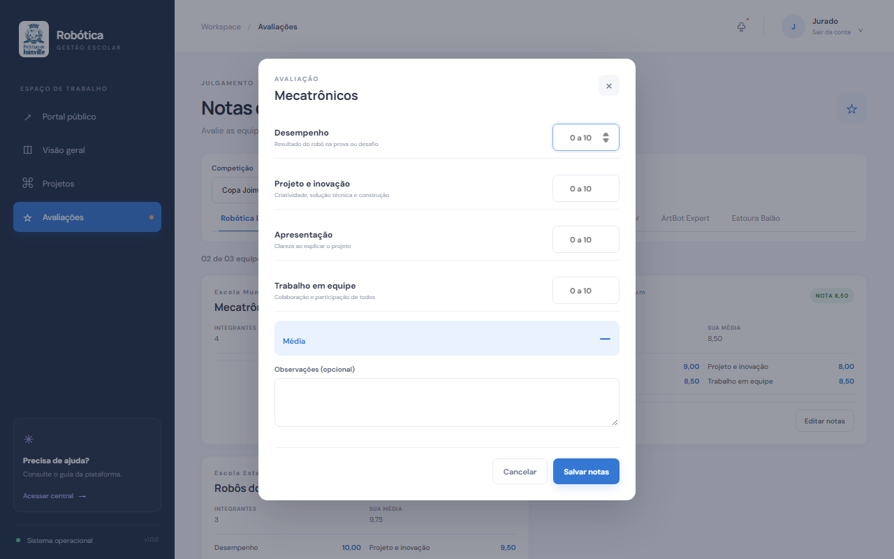
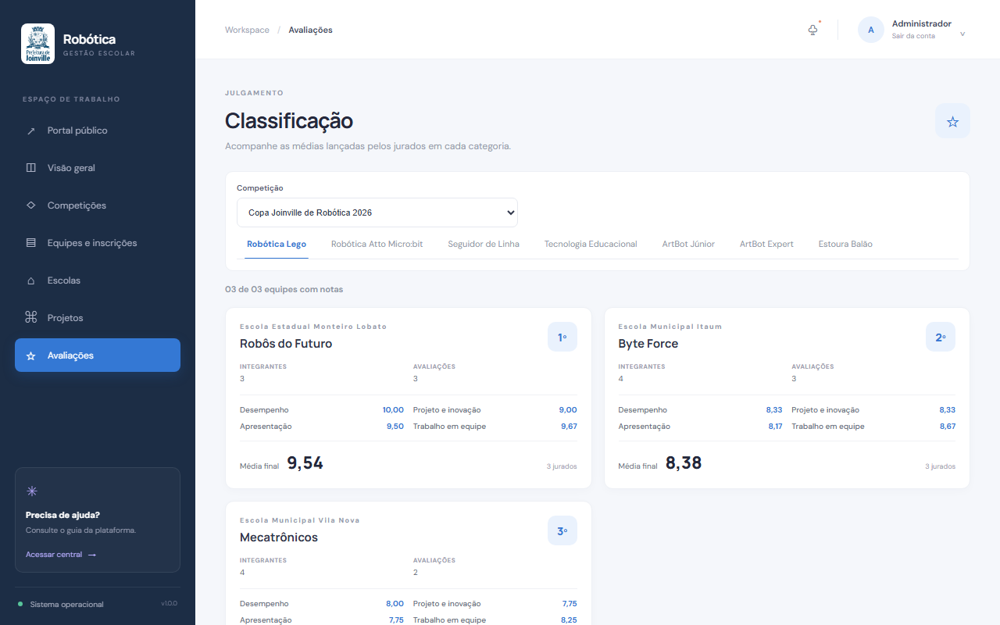
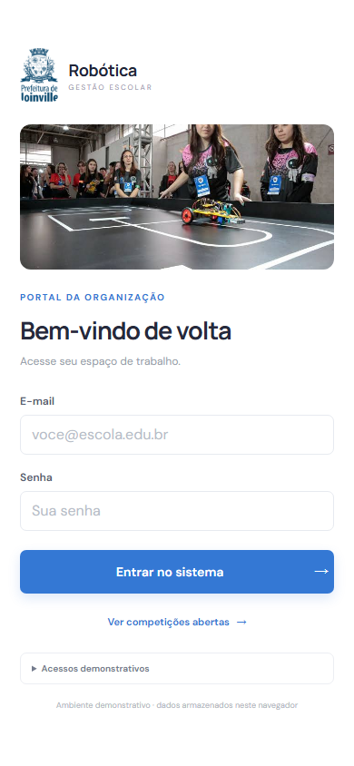
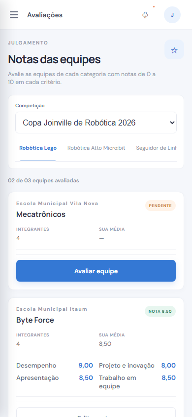
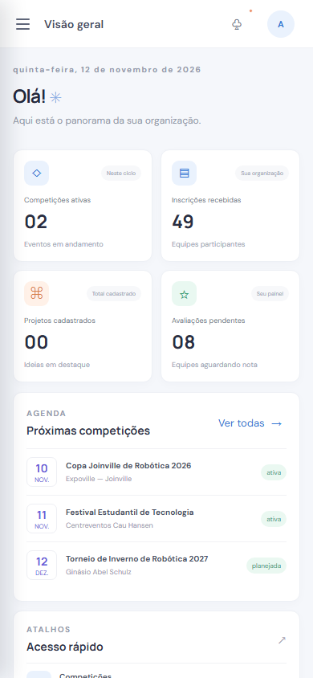

Inscrições soltas
Fichas, planilhas e e-mails espalhados entre escolas e organização.
Hackathon · Prefeitura de Joinville
Gestão de competições, equipes e avaliações em uma única plataforma.
Use ← → ou deslize para navegar
O desafio
Fichas, planilhas e e-mails espalhados entre escolas e organização.
Professores e organização sem visão clara do que está pendente.
Jurados anotam à mão e a classificação é calculada depois, com risco de erro.
A solução

Quem usa
Cria competições, editais e categorias, gerencia escolas e acompanha a classificação.
Cadastra equipes das suas escolas e aprova ou rejeita inscrições recebidas.
Avalia as equipes aprovadas em todas as categorias, com notas de 0 a 10.
Como funciona
Administração
Cada competição tem período do evento, local, janela de inscrições, limite de vagas e as 7 categorias oficiais.

Professores


Comunidade
Escolas consultam os editais publicados e inscrevem equipes sem precisar de login. A inscrição chega pendente para o professor responsável.

Julgamento
Notas de 0 a 10 por critério · média calculada na hora · uma avaliação por jurado e equipe

Resultado
A organização acompanha, por categoria, a média final de cada equipe, as médias por critério e quantos jurados já avaliaram.

Responsivo
Jurados avaliam na beira da arena; professores aprovam equipes de qualquer lugar.



Dados da demonstração
21 equipes · 3 jurados avaliando
14 equipes · avaliação parcial
Equipes aguardando os professores
Em desenvolvimento
Geração de certificados para participantes e equipes.
Exportação de resultados, inscrições e classificações.
Conexão com outros sistemas e serviços da rede.
Avisos sobre inscrições, aprovações e resultados.
Experimente a demonstração:
admin@robotica.edu.bradmin123professor@robotica.edu.brprof123jurado@robotica.edu.brjurado123